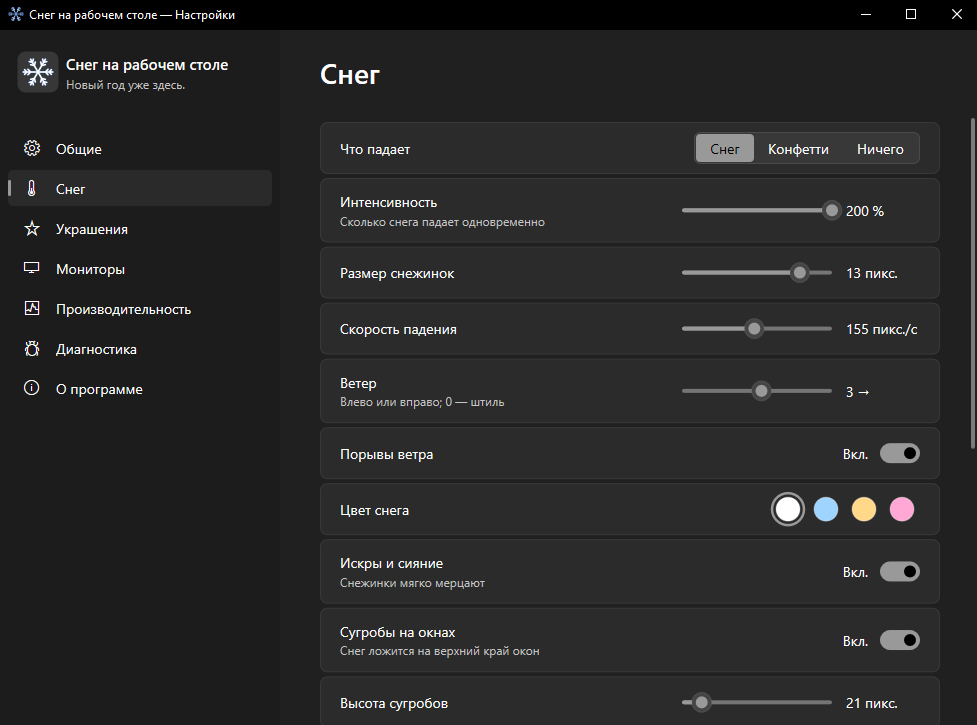
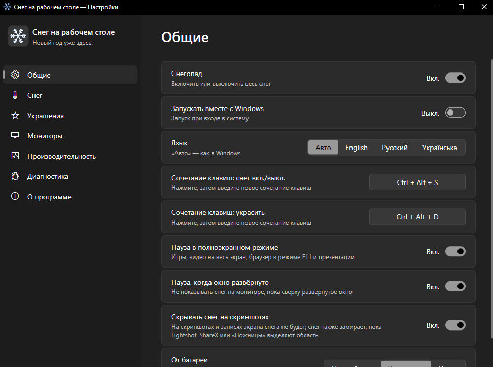
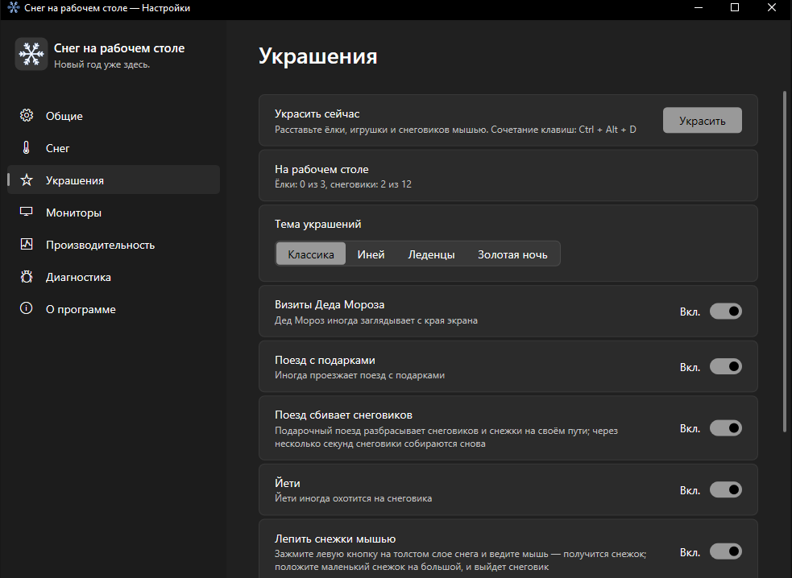

Попиксельная привязка
Снег лежит ровно на верхней рамке каждого окна и живёт по законам Windows:
- едет за окном пиксель-в-пиксель
- разлетается при резком рывке
- осыпается при сворачивании
Desktop Window Manager • Windows 10/11
Живой снег на каждом окне, интерактивные снеговики, поезд с подарками и мгновенная пауза в играх. Нативно для Windows 10 и 11.
Бесплатно • C++ & Direct2D • < 1 МБ • 30–144 FPS • Без установки

Снег оседает на кромке. Кликни или потряси витрину, чтобы стряхнуть.
Снег лежит ровно на верхней рамке каждого окна и живёт по законам Windows:
Desktop Window Manager • Windows 10/11
Мгновенно исчезает в играх, на YouTube во весь экран и во время выделения области скриншота.
Живой мир поверх рабочего стола: Санта, йети и поезд с подарками сбивает снеговиков на своём пути — и они собираются обратно.
Работают глобально — даже когда окно приложения свёрнуто.
Родные окна приложения: слайдеры, темы, цвета. Никаких макетов — только реальные скриншоты.


Запуск, хоткеи, язык
Скачай, распакуй, запусти DesktopSnow.exe — снег пойдёт через секунду.
Скачать Desktop SnowПортативно · Без установки · Windows 10/11